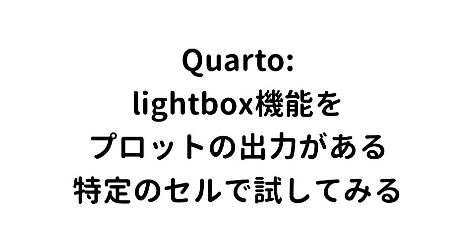
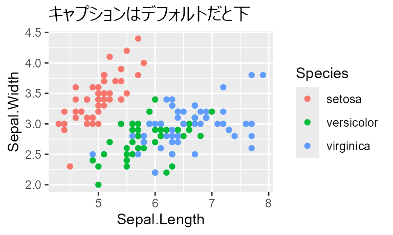

Packages
Contents
Background
画像をクリックするとズームしてくれるlightbox機能。ファイルの画像全部に適用させたい場合はYAMLヘッダーでlightbox: trueとすればいいのですが、（複数の）画像の出力がある特定のセルだけに適用させたいということもあると思います。というわけで試してみました。（といいつつ、過去の記事ではすでに使っています。） QuartoのウェブサイトのGuideにコードはあるんですが、セル出力の場合だと実際どういった感じになるのかという実演がなかったので、やってみることにしました。使用しているQuartoのバージョンは 1.9.38 です。
出力が1つの場合
デフォルト
lightbox
デフォルト: キャプション付き

lightbox: キャプション付き
lightbox: description
lightboxの方はキャプションとは別に説明もつけられるらしい。
出力が複数の場合
R 4.5から標準で使えるようになったpenguinsデータセット。palmerpenguins::penguinsとは列名がちょっと違う。dplyr::group_map()を使って、性別ごとにplotを作ってlistに収めたオブジェクト（plots_penguins）を作ります。
Code
plots_penguins <-
penguins |>
drop_na(sex) |>
group_by(sex) |>
group_map(
.f = \(x, idx) {
x |>
ggplot(aes(x = species, y = bill_len)) +
see::geom_violindot(
aes(fill = species),
color = NA,
show.legend = FALSE,
binwidth = 1/3,
dots_size = 2,
position_dots = position_nudge(x = -.08)
) +
geom_boxplot(
width = .1,
outliers = FALSE
) +
scale_y_continuous(
limits = c(30, 60),
expand = expansion(mult = .01)
) +
theme_bw() +
ggtitle(paste0("Penguins: ", idx$sex))
}
)デフォルト

lightbox: そのまま
そのままだと1枚ずつに適用されます。
[[1]]
[[2]]
lightbox: グループ化
インデントをつけてgroup: <group_name>の形でチャンクオプションに追加すると、グループ化できます。同じグループのものは画面左右端の左右ボタンで行き来できます。
```{r}
#| lightbox:
1#| group: penguins_data
plots_penguins
```- 1
- ここ。
[[1]]
[[2]]
lightbox: 複数列
チャンクオプションのlayout-ncolと組み合わせると複数列で並べることができます。listの出力の場合、インデックスだけで1セル分持ってかれるようです。チャンクオプションresultsをhideまたはfalseにしてインデックスの出力は消しておくのがいいと思います。


{kind=link}
{kind=link}
{kind=link}
{kind=link}
lightbox: キャプションとdescription
複数枚出力でも、それぞれの出力にキャプションやdescriptionはつけられます。


Conclusion
というわけで、特定のセル出力でのlightbox機能を試してみました。セルのチャンクオプションでいろいろ設定すればいいみたいですね。
Session Infomation
Notesessioninfo
R version 4.5.3 (2026-03-11 ucrt)
Platform: x86_64-w64-mingw32/x64
Running under: Windows 11 x64 (build 26100)
Matrix products: default
LAPACK version 3.12.1
locale:
[1] LC_COLLATE=Japanese_Japan.utf8 LC_CTYPE=Japanese_Japan.utf8 LC_MONETARY=Japanese_Japan.utf8
[4] LC_NUMERIC=C LC_TIME=Japanese_Japan.utf8
time zone: Asia/Tokyo
tzcode source: internal
attached base packages:
[1] stats graphics grDevices utils datasets methods base
other attached packages:
[1] see_0.13.0 lubridate_1.9.5 forcats_1.0.1 stringr_1.6.0 dplyr_1.2.1 purrr_1.2.2
[7] readr_2.2.0 tidyr_1.3.2 tibble_3.3.1 ggplot2_4.0.3 tidyverse_2.0.0
loaded via a namespace (and not attached):
[1] gtable_0.3.6 jsonlite_2.0.0 compiler_4.5.3 tidyselect_1.2.1 systemfonts_1.3.2
[6] scales_1.4.0 textshaping_1.0.5 yaml_2.3.12 fastmap_1.2.0 R6_2.6.1
[11] labeling_0.4.3 generics_0.1.4 knitr_1.51 htmlwidgets_1.6.4 insight_1.5.0
[16] tzdb_0.5.0 pillar_1.11.1 RColorBrewer_1.1-3 rlang_1.2.0 stringi_1.8.7
[21] xfun_0.57 S7_0.2.2 otel_0.2.0 timechange_0.4.0 cli_3.6.6
[26] withr_3.0.2 magrittr_2.0.5 digest_0.6.39 grid_4.5.3 rstudioapi_0.18.0
[31] hms_1.1.4 lifecycle_1.0.5 vctrs_0.7.3 evaluate_1.0.5 glue_1.8.1
[36] farver_2.1.2 ragg_1.5.2 pacman_0.5.1 rmarkdown_2.31 tools_4.5.3
[41] pkgconfig_2.0.3 htmltools_0.5.9